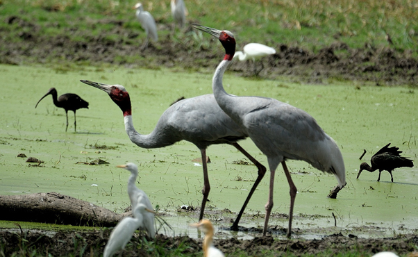
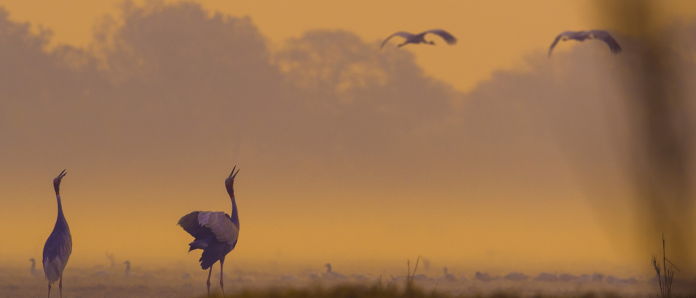
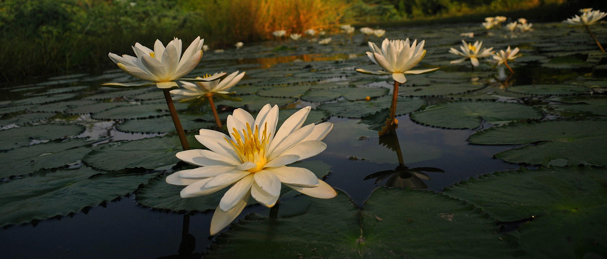
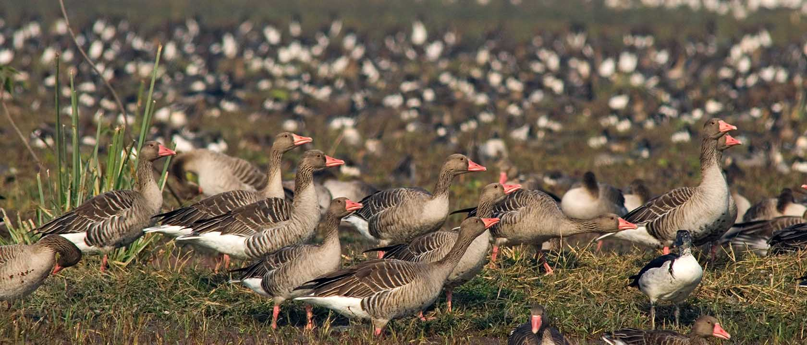
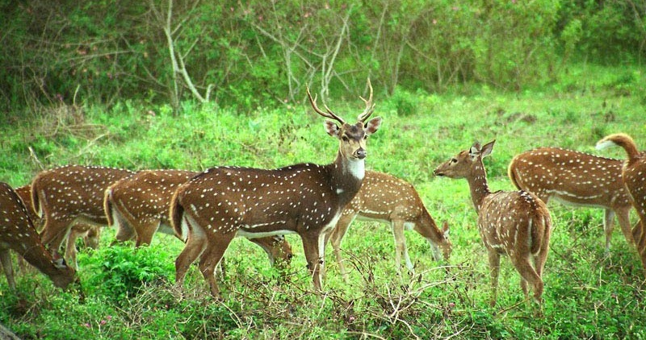

Keoladeo National Park Rajasthan Tag : Natural UNESCO World Heritage Site Year of Inscription : 1985 Reasons for Inscription : Following the criteria no (x) the Keoladeo National Park was declared a UNESCO World Heritage Site. Formerly a hunting ground used by the Maharajas to hunt ducks, this national park is now home to around 375 rare species of birds. Among this large variety, two endangered, five critically endangered, and six vulnerable species are recorded. Mainly the park is known for being a wintering spot of the birds of neighbouring cold countries like Siberia and China. Every year a significant group of critically endangered Siberian Crane congregates here before flying to other region. Category : Wildlife habitat, Fauna Timing : All through the year Closed on : Null |
 |
Located in Bharatpur town of Rajasthan, India, Keoladeo is a significant national park mainly known for housing majestic varieties of birds. It is the only national park in India which is guarded from all sides by a strong boundary wall. The property is spread across an area of around 2,873 ha where annually around 115 species of birds breed. Along with 15 water bird species the property also supports 42 species of raptors which transforms the destination into a bird lover's delight. |
The park is strategically located in the middle of Central Asian Migratory flyway what supports a large variety of birds starting from geese, ducks, pelicans, coots, and waders in winter. The park also serves as a wintering ground for globally threatened species of birds like Imperial Eagle and the Greater Spotted Eagle. The most wonderful heronry of this region is occupied by 15 species of herons, cormorants, storks and spoonbills. |
| 
Keoladeo National Park |

Keoladeo National Park |
||||
| 
Keoladeo National Park |

Keoladeo National Park Deer Park |
|
||||||||||||||||||||||||||||
| Agra is the nearest domestic airport to Bharatpur whereas IGI, Delhi is the nearest International airport. | Bharatpur Railway Station is the nearest rail head to Bharatpur which is well connected with the important cities of the country like Delhi, Agra, Jaipur and Mumbai. | Regular bus services are available providing fast connectivity with the neighbouring cities like Delhi, Agra, Uttar Pradesh, and Jaipur. |